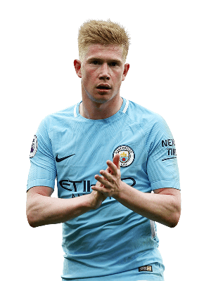
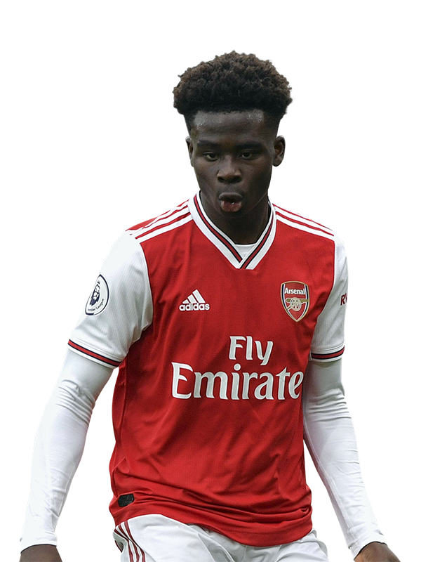
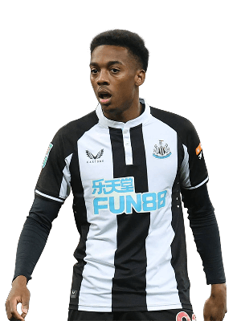

Expected points per gameweek - 5.30
Expected points per million - 0.41
Mohamed Salah is our pick for the best midfielder position, with an expected points of 5.30 he ranks first out of all midfielders. This pick may be surprising to any of you that keep up with FPL content creation as everyone seems to laud over De Bruyne and state owning Salah is a waste of money, without noticing Salah is now very close to the same points score as KDB. Granted at 12.8m and with an expected points per million of 0.41 (The same as KDB) his value for money is not great but his pure expected points is extremely high much like De bruyne. But we think Salah is the best option as it gives more freedom to bring in other high scoring Man City players like Cancelo, Foden and Haaland.
Touchline rating 9/10

Expected points per gameweek - 5.17
Expected points per million - 0.41
Speaking off Kevin De Bruyne, he is our second pick. A monster creator and always capable of scoring a goal he had to be on our list. It's also worth noting that playing with players that can consistantly out perform xg (Haaland) will likely mean he overperforms his expected assists and returns more points that expected, making the battle between choosing KDB or Salah even closer.
Touchline rating 9/10

Expected points per gameweek - 4.88
Expected points per million - 0.61
Bukayo Saka is our third pick. A great mid price range midfielder, playing in a very strong team and consistantly getting returns. What's not to like?
Touchline rating 9/10
Expected points per gameweek - 4.72
Expected points per million - 0.83
Miguel Almirón, AKA the FPL GOAT, is the best value midfielder and a must have for every manager. Almost half the price of someone like Son and around 0.70 more xp. In short if you want a good team you have to have him.
Touchline rating 9/10
Expected points per gameweek - 4.42
Expected points per million - 0.79
Pascal Gross has been unstoppable for Brighton this season and that's backed up by the stats. 4.42 xp is nothing short of excellent and value of 0.79 makes him one of the best value players in the whole of FPL. Every team should have him, even if he's just a cheap option to have on the bench
Touchline rating 8/10

Expected points per gameweek - 3.72
Expected points per million - 0.76
Joe Willock makes it to third place due to having the highest xp for any midfielder under 5m, making him the perfect fifth choice midfielder. The only exception to that being when you already have three newcastle players.
Touchline rating 7/10